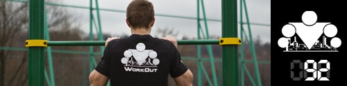

<==== Вернуться к оглавлению

День 85. Воркаут Фристайл
День 86. Как составить программу тренировок (теория)
День 87. Основные принципы физических тренировок
День 88. Периодизация физической нагрузки
День 89. Готовые программы тренировок на турнике и брусьях
День 90. Составление программы тренировок (практика)
День 91. Последний день ПРОДВИНУТОГО блока
======> День 93. ТУРБО комплекс БЕТА